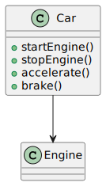
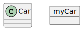
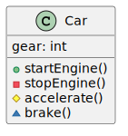
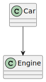
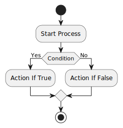
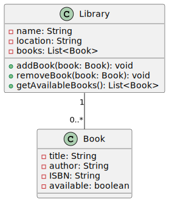
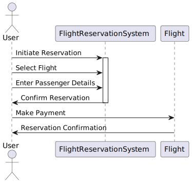

PlantUML
Introducción
El modelado visual es una parte esencial del desarrollo de software. Ayuda a los equipos de desarrollo a comprender, comunicar y documentar sus diseños y arquitecturas de manera efectiva. Uno de los estándares más ampliamente utilizados para el modelado visual en el desarrollo de software es UML (Unified Modeling Language).
PlantUML es una herramienta que simplifica la creación de diagramas UML y otros tipos de diagramas de modelado visual. Utiliza una sintaxis de marcado de texto simple y genera automáticamente diagramas visuales de alta calidad. En este artículo, exploraremos cómo utilizar PlantUML para crear diagramas efectivos y cómo puedes integrarlo en tus proyectos de Python y Jupyter Notebook.
Instalación de PlantUML
Antes de comenzar, necesitamos instalar PlantUML. PlantUML se ejecuta en la máquina virtual de Java, por lo que debes asegurarte de tener Java instalado en tu sistema. Luego, puedes descargar la última versión desde el siguiente enlace.
Además, necesitaremos Graphviz, una herramienta para la visualización de grafos que PlantUML utiliza para generar diagramas. Puedes descargar Graphviz desde su sitio web oficial e instalarlo en tu sistema.
Creando Diagramas con PlantUML
Nota: Para estos ejemplos, utilizaremos iPlantUML para generar los diagramas de PlantUML en Jupyter Notebook.
PlantUML utiliza una sintaxis basada en texto para definir diagramas. Puedes crear diagramas UML, diagramas de flujo, diagramas de secuencia y más utilizando esta sintaxis simple. Aquí hay un ejemplo de un diagrama de clases UML básico:
%%plantuml
@startuml
class Car {
+startEngine()
+stopEngine()
+accelerate()
+brake()
}
Car --> Engine
@enduml

Este código define una clase Car con cuatro métodos y establece una relación con la clase Engine.
Para generar un diagrama a partir de este código, puedes usar el comando plantuml desde la línea de comandos:
Esto generará una imagen del diagrama UML en el archivo diagrama.clase.png.
Sintaxis Básica de PlantUML
PlantUML ofrece una variedad de elementos de diagrama y relaciones que puedes utilizar en tus diagramas. Aquí hay algunos ejemplos de la sintaxis básica de PlantUML:
Clases y Objetos

Métodos y Atributos
%%plantuml
@startuml
class Car {
+startEngine()
-stopEngine()
#accelerate()
~brake()
gear: int
}
@enduml

Relaciones

Diagramas de Flujo
%%plantuml
@startuml
start
:Start Process;
if (Condition) then (Yes)
:Action If True;
else (No)
:Action If False;
endif
stop
@enduml

Ejemplos Prácticos con PlantUML
Diagrama de Clases UML
Veamos un ejemplo más detallado de un diagrama de clases UML. Supongamos que estamos modelando una aplicación de biblioteca. Aquí está el código PlantUML para un diagrama de clases que representa esta aplicación:
%%plantuml
@startuml
class Library {
-name: String
-location: String
-books: List<Book>
+addBook(book: Book): void
+removeBook(book: Book): void
+getAvailableBooks(): List<Book>
}
class Book {
-title: String
-author: String
-ISBN: String
-available: boolean
}
Library "1" -- "0..*" Book
@enduml

Este código define dos clases, Library y Book, con atributos y métodos relevantes. También establece una relación entre las clases Library y Book para representar que una biblioteca puede contener múltiples libros.
Diagrama de Secuencia
Un diagrama de secuencia es útil para visualizar la interacción entre objetos a lo largo del tiempo. Supongamos que estamos modelando un sistema de reserva de vuelos. Aquí está el código PlantUML para un diagrama de secuencia que representa la reserva de un vuelo:
%%plantuml
@startuml
actor User
participant FlightReservationSystem
participant Flight
User -> FlightReservationSystem: Initiate Reservation
activate FlightReservationSystem
User -> FlightReservationSystem: Select Flight
User -> FlightReservationSystem: Enter Passenger Details
User <- FlightReservationSystem: Confirm Reservation
deactivate FlightReservationSystem
User -> Flight: Make Payment
User <- Flight: Reservation Confirmation
@enduml

Este diagrama muestra cómo el usuario interactúa con el sistema de reserva de vuelos y cómo se comunica con el objeto Flight para confirmar la reserva.
Conclusión
PlantUML es una herramienta poderosa para el modelado visual que facilita la creación de diagramas UML y otros tipos de diagramas. Su sintaxis basada en texto es fácil de aprender y su integración con Python y Jupyter Notebook lo hace aún más versátil. Al agregar diagramas visuales a tu documentación y presentaciones, puedes mejorar la comunicación y comprensión de tus diseños y arquitecturas de software.